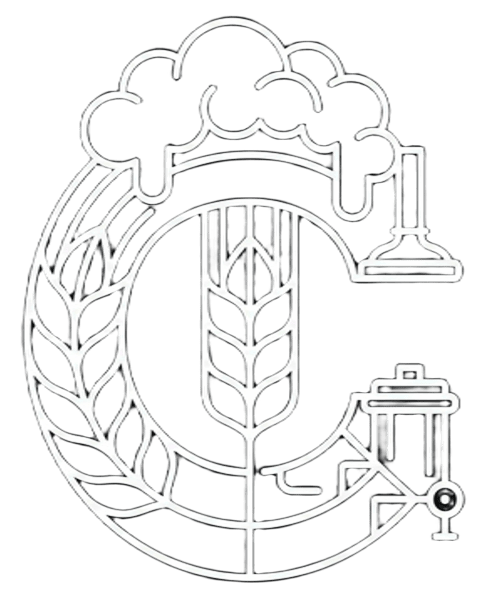

Nuestra Galería
Imágenes que cuentan lo que las palabras no pueden.



CERTEZA
CERVECERÍA ARTESANAL
Cerveza Artesanal
Espuma dorada, aroma intenso y un carácter que deja huella. Cada sorbo convierte el momento en una experiencia irresistible.
Variedades artesanales
Clientes felices
Elaborando con pasión
Eventos realizados
FIRMA DE MARCA
Cada lote se piensa para quedarse en la conversación, no solo en el vaso. Certeza mezcla ritual, diseño y sabor para que cada brindis tenga peso propio.
Imágenes que cuentan lo que las palabras no pueden.
NUESTRO PROCESO
Maltas premium 100% naturales
3 horas de extracción perfecta
90 min con lúpulo artesanal
2-3 semanas a temperatura controlada
Reposado en tanques de acero
Botella fresca lista para disfrutar
PRÓXIMOS EVENTOS

Sesiones en vivo con cerveza fría, luces bajas y una mesa lista para quedarse toda la noche.

El plan grande de la casa: barra encendida, mesas llenas y energía de rooftop para cerrar la semana.

Una noche pensada para brindar: rondas compartidas, maridaje rápido y ambiente de celebración.

Cata guiada frente a barra con servicio especial, pours perfectos y foco total en la experiencia.
NUEVA EXPERIENCIA
Color, espuma y energía en una sola toma. Mira el video y deja que Certeza hable por sí sola.
RESERVAR AHORA
ESTAMOS ESPERANDO
Una barra diseñada para quedarse. Luz cálida, música en vivo los fines de semana y la mejor selección de cervezas artesanales del país.